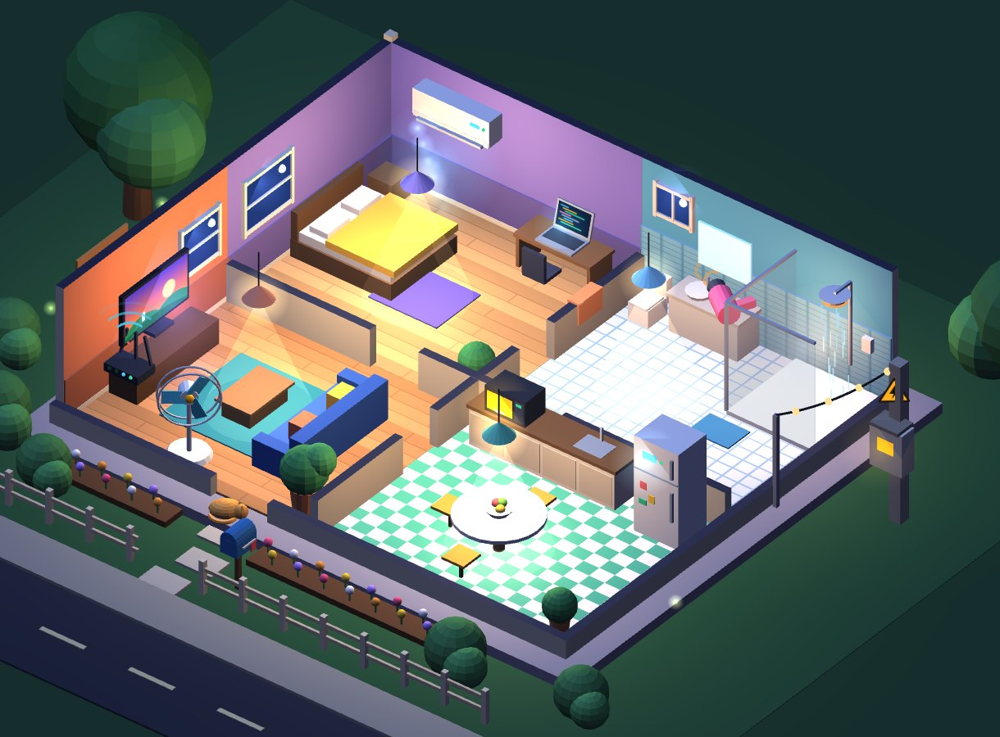
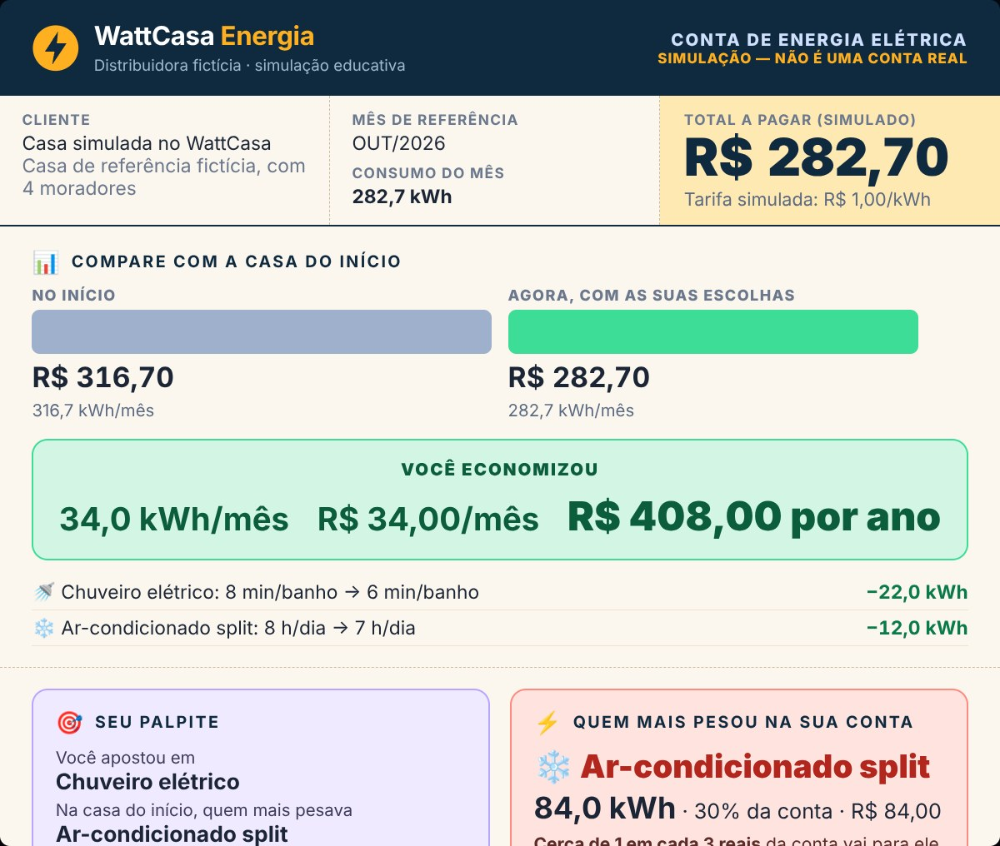

Mexa na casa, veja o que muda na conta.
Uma casa interativa que ensina, na prática, para onde vai a energia de uma casa.
EXPOTEC 2026
O problema
Muita gente sabe que "o chuveiro gasta muito", mas não sabe quanto — nem que o tempo de uso pode pesar tanto quanto a potência do aparelho.
Sem enxergar o consumo, fica difícil entender a própria conta e mudar algum hábito.
A ideia
Como funciona
W é o quanto o aparelho puxa enquanto está ligado. kWh é a energia acumulada no tempo — é o que o medidor registra e o que vem na conta. Geladeira e ar-condicionado ligam e desligam sozinhos, por isso recebem um tratamento especial (explicado na Central da Banca).
A descoberta
O resultado
A conta mostra o que mais pesou, a comparação com o palpite, os cômodos, o consumo que não para e dicas calculadas a partir das escolhas da pessoa.

Como fizemos
Honestidade
Próximos passos
Experimente